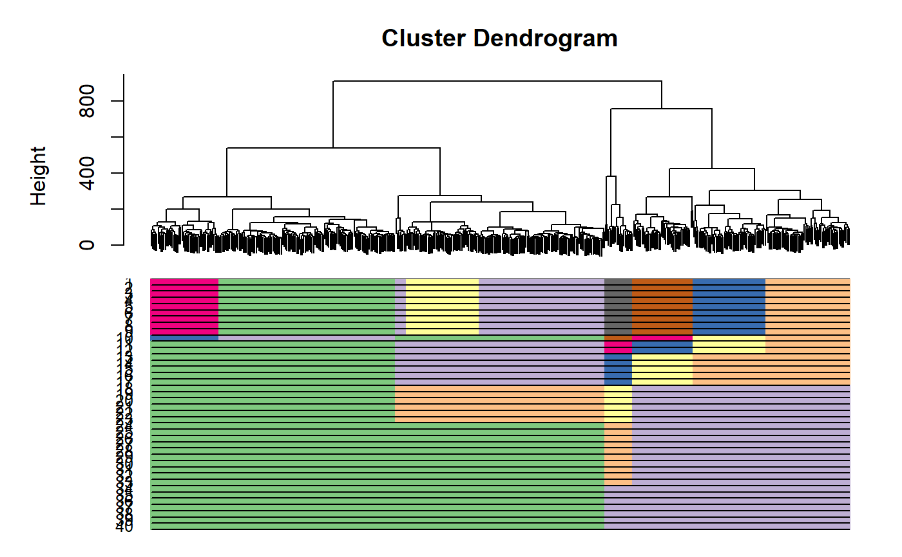

plot_CORE.RdThis function plots CORE and all clustering results underneath
plot_CORE(original.tree, list_clusters = NULL, color_branch = NULL)
| original.tree | the original dendrogram before clustering |
|---|---|
| list_clusters | a list containing clustering results for each of the |
| color_branch | is a vector containing user-specified colors (the number of unique colors should be equal or larger than the number of clusters). This parameter allows better selection of colors for the display. |
a plot with clustering bars underneath the tree
day5 <- sample2 cellnames <- colnames(day5$dat5_counts) cluster <-day5$dat5_clusters cellnames <-data.frame('Cluster'=cluster, 'cellBarcodes' = cellnames) mixedpop2 <-NewscGPS_SME(ExpressionMatrix = day5$dat5_counts, GeneMetadata = day5$dat5geneInfo, CellMetadata = cellnames) CORE_cluster <- CORE_scGPS(mixedpop2, remove_outlier = c(0))#> [1] "Performing 1 round of filtering" #> [1] "Identifying top variable genes" #> [1] "Calculating distance matrix" #> [1] "Performing hierarchical clustering" #> [1] "Finding clustering information" #> [1] "No more outliers detected in filtering round 1" #> [1] "Identifying top variable genes" #> [1] "Calculating distance matrix" #> [1] "Performing hierarchical clustering" #> [1] "Finding clustering information" #> [1] "writing clustering result for run 1" #> [1] "writing clustering result for run 2" #> [1] "writing clustering result for run 3" #> [1] "writing clustering result for run 4" #> [1] "writing clustering result for run 5" #> [1] "writing clustering result for run 6" #> [1] "writing clustering result for run 7" #> [1] "writing clustering result for run 8" #> [1] "writing clustering result for run 9" #> [1] "writing clustering result for run 10" #> [1] "writing clustering result for run 11" #> [1] "writing clustering result for run 12" #> [1] "writing clustering result for run 13" #> [1] "writing clustering result for run 14" #> [1] "writing clustering result for run 15" #> [1] "writing clustering result for run 16" #> [1] "writing clustering result for run 17" #> [1] "writing clustering result for run 18" #> [1] "writing clustering result for run 19" #> [1] "writing clustering result for run 20" #> [1] "writing clustering result for run 21" #> [1] "writing clustering result for run 22" #> [1] "writing clustering result for run 23" #> [1] "writing clustering result for run 24" #> [1] "writing clustering result for run 25" #> [1] "writing clustering result for run 26" #> [1] "writing clustering result for run 27" #> [1] "writing clustering result for run 28" #> [1] "writing clustering result for run 29" #> [1] "writing clustering result for run 30" #> [1] "writing clustering result for run 31" #> [1] "writing clustering result for run 32" #> [1] "writing clustering result for run 33" #> [1] "writing clustering result for run 34" #> [1] "writing clustering result for run 35" #> [1] "writing clustering result for run 36" #> [1] "writing clustering result for run 37" #> [1] "writing clustering result for run 38" #> [1] "writing clustering result for run 39" #> [1] "writing clustering result for run 40" #> [1] "Done clustering, moving to stability calculation..." #> [1] "Done calculating stability..." #> [1] "Start finding optimal clustering..." #> [1] "Done finding optimal clustering..."plot_CORE(CORE_cluster$tree, CORE_cluster$Cluster)